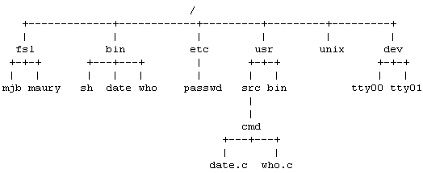

В этом разделе кратко рассматриваются главные детали системы UNIX, в частности файловая система, среда выполнения процессов и элементы структурных блоков (например, каналы). Подробное исследование взаимодействия этих деталей с ядром содержится в последующих главах.
Файловая система UNIX характеризуется:
- иерархической структурой,
- согласованной обработкой массивов данных,
- возможностью создания и удаления файлов,
- динамическим расширением файлов,
- защитой информации в файлах,
- трактовкой периферийных устройств (таких как терминалы и ленточные устройства) как файлов.

Рисунок 1.2. Пример древовидной структуры файловой системы
Файловая система организована в виде дерева с одной исходной вершиной, которая называется корнем (записывается: "/"); каждая вершина в древовидной структуре файловой системы, кроме листьев, является каталогом файлов, а файлы, соответствующие дочерним вершинам, являются либо каталогами, либо обычными файлами, либо файлами устройств. Имени файла предшествует указание пути поиска, который описывает место расположения файла в иерархической структуре файловой системы. Имя пути поиска состоит из компонент, разделенных между собой наклонной чертой (/); каждая компонента представляет собой набор символов, составляющих имя вершины (файла), которое является уникальным для каталога (предыдущей компоненты), в котором оно содержится. Полное имя пути поиска начинается с указания наклонной черты и идентифицирует файл (вершину), поиск которого ведется от корневой вершины дерева файловой системы с обходом тех ветвей дерева файлов, которые соответствуют именам отдельных компонент. Так, пути "/etc/passwd", "/bin/who" и "/usr/src/cmd/who.c" указывают на файлы, являющиеся вершинами дерева, изображенного на Рисунке 1.2, а пути "/bin/passwd" и "/usr/ src/date.c" содержат неверный маршрут. Имя пути поиска необязательно должно начинаться с корня, в нем следует указывать маршрут относительно текущего для выполняемого процесса каталога, при этом предыдущие символы "наклонная черта" в имени пути опускаются. Так, например, если мы находимся в каталоге "/dev", то путь "tty01" указывает файл, полное имя пути поиска для которого "/dev /tty01".
Программы, выполняемые под управлением системы UNIX, не содержат никакой информации относительно внутреннего формата, в котором ядро хранит файлы данных, данные в программах представляются как бесформатный поток байтов. Программы могут интерпретировать поток байтов по своему желанию, при этом любая интерпретация никак не будет связана с фактическим способом хранения данных в операционной системе. Так, синтаксические правила, определяющие задание метода доступа к данным в файле, устанавливаются системой и являются едиными для всех программ, однако семантика данных определяется конкретной программой. Например, программа форматирования текста troff ищет в конце каждой строки текста символы перехода на новую строку, а программа учета системных ресурсов acctcom работает с записями фиксированной длины. Обе программы пользуются одними и теми же системными средствами для осуществления доступа к данным в файле как к потоку байтов, и внутри себя преобразуют этот поток по соответствующему формату. Если любая из программ обнаружит, что формат данных неверен, она принимает соответствующие меры.
Каталоги похожи на обычные файлы в одном отношении; система представляет информацию в каталоге набором байтов, но эта информация включает в себя имена файлов в каталоге в объявленном формате для того, чтобы операционная система и программы, такие как ls (выводит список имен и атрибутов файлов), могли их обнаружить.
Права доступа к файлу регулируются установкой специальных битов разрешения доступа, связанных с файлом. Устанавливая биты разрешения доступа, можно независимо управлять выдачей разрешений на чтение, запись и выполнение для трех категорий пользователей: владельца файла, группового пользователя и прочих. Пользователи могут создавать файлы, если разрешен доступ к каталогу. Вновь созданные файлы становятся листьями в древовидной структуре файловой системы.
Для пользователя система UNIX трактует устройства так, как если бы они были файлами. Устройства, для которых назначены специальные файлы устройств, становятся вершинами в структуре файловой системы. Обращение программ к устройствам имеет тот же самый синтаксис, что и обращение к обычным файлам; семантика операций чтения и записи по отношению к устройствам в большой степени совпадает с семантикой операций чтения и записи обычных файлов. Способ защиты устройств совпадает со способом защиты обычных файлов: путем соответствующей установки битов разрешения доступа к ним (файлам). Поскольку имена устройств выглядят так же, как и имена обычных файлов, и поскольку над устройствами и над обычными файлами выполняются одни и те же операции, большинству программ нет необходимости различать внутри себя типы обрабатываемых файлов.
Например, рассмотрим программу на языке Си (Рисунок 1.3), в которой создается новая копия существующего файла. Предположим, что исполняемая версия программы имеет наименование copy. Для запуска программы пользователь вводит с терминала:
copy oldfile newfile
где oldfile - имя существующего файла, а newfile - имя создаваемого файла. Система выполняет процедуру main, присваивая аргументу argc значение количества параметров в списке argv, а каждому элементу массива argv значение параметра, сообщенного пользователем. В приведенном примере argc имеет значение 3, элемент argv[0] содержит строку символов "copy" (имя программы условно является нулевым параметром), argv[1] - строку символов "oldfile", а argv[2] - строку символов "newfile". Затем программа проверяет, правильное ли количество параметров было указано при ее запуске. Если это так, запускается операция open (открыть) для файла oldfile с параметром "read-only" (только для чтения), в случае успешного выполнения которой запускается операция creat (открыть) для файла newfile. Режим доступа к вновь созданному файлу описывается числом 0666 (в восьмеричном коде), что означает разрешение доступа к файлу для чтения и записи для всех пользователей. Все обращения к операционной системе в случае неудачи возвращают код -1; если же неудачно завершаются операции open и creat, программа выдает сообщение и запускает операцию exit (выйти) с возвращением кода состояния, равного 1, завершая свою работу и указывая на возникновение ошибки.
Операции open и creat возвращают целое значение, являющееся дескриптором файла и используемое программой в последующих ссылках на файлы. После этого программа вызывает подпрограмму copy, выполняющую в цикле операцию read (читать), по которой производится чтение в буфер порции символов из существующего файла, и операцию write (писать) для записи информации в новый файл. Операция read каждый раз возвращает количество прочитанных байтов (0 - если достигнут конец файла). Цикл завершается, если достигнут конец файла или если произошла ошибка при выполнении операции read (отсутствует контроль возникновения ошибок при выполнении операции write). Затем управление из подпрограммы copy возвращается в основную программу и запускается операция exit с кодом состояния 0 в качестве параметра, что указывает на успешное завершение выполнения программы.
Программа копирует любые файлы, указанные при ее вызове в качестве аргументов, при условии, что разрешено открытие существующего файла и создание нового файла. Файл может включать в себя как текст, который может быть выведен на печатающее устройство, например, исходный текст программы, так и символы, не выводимые на печать, даже саму программу. Таким образом, оба вызова:
copy copy.c newcopy.c
copy copy newcopy
являются допустимыми. Существующий файл также может быть каталогом. Например, по вызову:
copy . dircontents
копируется содержимое текущего каталога, обозначенного символом ".", в обычный файл "dircontents"; информация в новом файле совпадает, вплоть до каждого байта, с содержимым каталога, только этот файл обычного типа (для создания нового каталога предназначена операция mknod). Наконец, любой из файлов может быть файлом устройства. Например, программа, вызванная следующим образом:
copy /dev/tty terminalread
читает символы, вводимые с терминала (файл /dev/tty соответствует терминалу пользователя), и копирует их в файл terminalread, завершая работу только в том случае, если пользователь нажмет <Ctrl/d>. Похожая форма запуска программы:
copy /dev/tty /dev/tty
вызывает чтение символов с терминала и их копирование обратно на терминал.
#include <fcntl.h>
char buffer[2048];
int version = 1; /* будет объяснено в главе 2 */
main(argc,argv)
int argc;
char *argv[];
{
int fdold,fdnew;
if (argc != 3)
{
printf("need 2 arguments for copy program\n);
exit(1);
}
fdold = open(argv[1],O_RDONLY); /* открыть исходный
файл только для
чтения */
if (fdold == -1)
{
printf("cannot open file %s\n",argv[1]);
exit(1);
}
fdnew = creat(argv[2],0666); /* создать новый файл с
разрешением чтения и
записи для всех поль-
зователей */
if (fdnew == -1)
{
printf("cannot create file %s\n",argv[2]);
exit(1);
}
copy(fdold,fdnew);
exit(0);
}
copy(old,new)
int old,new;
{
int count;
while ((count = read(old,buffer,sizeof(buffer))) > 0)
write(new,buffer,count);
}
|
Рисунок 1.3. Программа копирования файла
Программой называется исполняемый файл, а процессом называется последовательность операций программы или часть программы при ее выполнении. В системе UNIX может одновременно выполняться множество процессов (эту особенность иногда называют мультипрограммированием или многозадачным режимом), при чем их число логически не ограничивается, и множество частей программы (такой как copy) может одновременно находиться в системе. Различные системные операции позволяют процессам порождать новые процессы, завершают процессы, синхронизируют выполнение этапов процесса и управляют реакцией на наступление различных событий. Благодаря различным обращениям к операционной системе, процессы выполняются независимо друг от друга.
Например, процесс, выполняющийся в программе, приведенной на Рисунке 1.4, запускает операцию fork, чтобы породить новый процесс. Новый процесс, именуемый порожденным процессом, получает значение кода завершения операции fork, равное 0, и активизирует операцию execl, которая выполняет программу copy (Рисунок 1.3). Операция execl загружает файл "copy", который предположительно находится в текущем каталоге, в адресное пространство порожденного процесса и запускает программу с параметрами, полученными от пользователя. В случае успешного выполнения операции execl управление в вызвавший ее процесс не возвращается, поскольку процесс выполняется в новом адресном пространстве (подробнее об этом в главе 7). Тем временем, процесс, запустивший операцию fork (родительский процесс), получает ненулевое значение кода завершения операции, вызывает операцию wait, которая приостанавливает его выполнение до тех пор, пока не закончится выполнение программы copy, и завершается (каждая программа имеет выход в конце главной процедуры, после которой располагаются программы стандартных библиотек Си, подключаемые в процессе компиляции). Например, если исполняемая программа называется run, пользователь запускает ее следующим образом:
run oldfile newfile
Процесс выполняет копирование файла с именем "oldfile" в файл с именем "newfile" и выводит сообщение. Хотя данная программа мало что добавила к программе "copy", в ней появились четыре основных обращения к операционной системе, управляющие выполнением процессов: fork, exec, wait и exit.
main(argc,argv)
int argc;
char *argv[];
{
/* предусмотрено 2 аргумента: исходный файл и новый файл */
if (fork() == 0)
execl("copy","copy",argv[1],argv[2],0);
wait((int *)0)
printf("copy done\n");
}
|
Рисунок 1.4. Программа порождения нового процесса, выполняющего копирование файлов
Вообще использование обращений к операционной системе дает возможность пользователю создавать программы, выполняющие сложные действия, и как следствие, ядро операционной системы UNIX не включает в себя многие функции, являющиеся частью "ядра" в других системах. Такие функции, и среди них компиляторы и редакторы, в системе UNIX являются программами пользовательского уровня. Наиболее характерным примером подобной программы может служить командный процессор shell, с которым обычно взаимодействуют пользователи после входа в систему. Shell интерпретирует первое слово командной строки как имя команды: во многих командах, в том числе и в командах fork (породить новый процесс) и exec (выполнить порожденный процесс), сама команда ассоциируется с ее именем, все остальные слова в командной строке трактуются как параметры команды.
Shell обрабатывает команды трех типов. Во-первых, в качестве имени команды может быть указано имя исполняемого файла в объектном коде, полученного в результате компиляции исходного текста программы (например, программы на языке Си). Во-вторых, именем команды может быть имя командного файла, содержащего набор командных строк, обрабатываемых shell'ом. Наконец, команда может быть внутренней командой языка shell (в отличие от исполняемого файла). Наличие внутренних команд делает shell языком программирования в дополнение к функциям командного процессора; командный язык shell включает команды организации циклов (for-in-do-done и while-do-done), команды выполнения по условиям (if-then-else-fi), оператор выбора, команду изменения текущего для процесса каталога (cd) и некоторые другие. Синтаксис shell'а допускает сравнение с образцом и обработку параметров. Пользователям, запускающим команды, нет необходимости знать, какого типа эти команды.
Командный процессор shell ищет имена команд в указанном наборе каталогов, который можно изменить по желанию пользователя, вызвав shell. Shell обычно исполняет команду синхронно, с ожиданием завершения выполнения команды прежде, чем считать следующую командную строку. Тем не менее, допускается и асинхронное исполнение, когда очередная командная строка считывается и исполняется, не дожидаясь завершения выполнения предыдущей команды. О командах, выполняемых асинхронно, говорят, что они выполняются на фоне других команд. Например, ввод команды
who
вызывает выполнение системой программы, хранящейся в файле /bin/who (****) и осуществляющей вывод списка пользователей, которые в настоящий момент работают с системой. Пока команда who выполняется, командный процессор shell ожидает завершения ее выполнения и только затем запрашивает у пользователя следующую команду. Если же ввести команду
who &
система выполнит программу who на фоне и shell готов немедленно принять следующую команду.
В среду выполнения каждого процесса в системе UNIX включается текущий каталог. Текущий для процесса каталог является начальным каталогом, имя которого присоединяется ко всем именам путей поиска, которые не начинаются с наклонной черты. Пользователь может запустить внутреннюю команду shell'а cd (изменить каталог) для перемещения по дереву файловой системы и для смены текущего каталога. Командная строка
cd /usr/src/uts
делает текущим каталог "/usr/src/uts". Командная строка
cd ../..
делает текущим каталог, который на две вершины "ближе" к корню (корневому каталогу): параметр ".." относится к каталогу, являющемуся родительским для текущего.
Поскольку shell является пользовательской программой и не входит в состав ядра операционной системы, его легко модифицировать и помещать в конкретные условия эксплуатации. Например, вместо командного процессора Баурна (называемого так по имени его создателя, Стива Баурна), являющегося частью версии V стандартной системы, можно использовать процессор команд Си, обеспечивающий работу механизма ведения истории изменений и позволяющий избегать повторного ввода только что использованных команд. В некоторых случаях при желании можно воспользоваться командным процессором shell с ограниченными возможностями, являющимся предыдущей версией обычного shell'а. Система может работать с несколькими командными процессорами одновременно. Пользователи имеют возможность запускать одновременно множество процессов, процессы же в свою очередь могут динамически порождать новые процессы и синхронизировать их выполнение. Все эти возможности обеспечиваются благодаря наличию мощных программных и аппаратных средств, составляющих среду выполнения процессов. Хотя привлекательность shell'а в наибольшей степени определяется его возможностями как языка программирования и его возможностями в обработке аргументов, в данном разделе основное внимание концентрируется на среде выполнения процессов, управление которой в системе возложено на командный процессор shell. Другие важные особенности shell'а выходят за рамки настоящей книги (подробное описание shell'а см. в [Bourne 78]).
Как уже говорилось ранее, концепция разработки системы UNIX заключалась в построении операционной системы из элементов, которые позволили бы пользователю создавать небольшие программные модули, выступающие в качестве конструкционных блоков при создании более сложных программ. Одним из таких элементов, с которым часто сталкиваются пользователи при работе с командным процессором shell, является возможность переназначения ввода-вывода. Говоря условно, процессы имеют доступ к трем файлам: они читают из файла стандартного ввода, записывают в файл стандартного вывода и выводят сообщения об ошибках в стандартный файл ошибок. Процессы, запускаемые с терминала, обычно используют терминал вместо всех этих трех файлов, однако каждый файл независимо от других может быть "переназначен". Например, команда
ls
выводит список всех файлов текущего каталога на устройство (в файл) стандартного вывода, а команда
ls > output
переназначает выводной поток со стандартного вывода в файл "output" в текущем каталоге, используя вышеупомянутый системный вызов creat. Подобным же образом, команда
mail mjb < letter
открывает (с помощью системного вызова open) файл "letter" в качестве файла стандартного ввода и пересылает его содержимое пользователю с именем "mjb". Процессы могут переназначать одновременно и ввод, и вывод, как, например, в командной строке:
nroff -mm < doc1 > doc1.out 2> errors
где программа форматирования nroff читает вводной файл doc1, в качестве файла стандартного вывода задает файл doc1.out и выводит сообщения об ошибках в файл errors ("2>" означает переназначение вывода, предназначавшегося для файла с дескриптором 2, который соответствует стандартному файлу ошибок). Программы ls, mail и nroff не знают, какие файлы выбраны в качестве файлов стандартного ввода, стандартного вывода и записи сообщений об ошибках; командный процессор shell сам распознает символы "<", ">" и "2>" и назначает в соответствии с их указанием файлы для стандартного ввода, стандартного вывода и записи сообщений об ошибках непосредственно перед запуском процессов.
Вторым конструкционным элементом является канал, механизм, обеспечивающий информационный обмен между процессами, выполнение которых связано с операциями чтения и записи. Процессы могут переназначать выводной поток со стандартного вывода на канал для чтения с него другими процессами, переназначившими на канал свой стандартный ввод. Данные, посылаемые в канал первыми процессами, являются входными для вторых процессов. Вторые процессы так же могут переназначить свой выводной поток и так далее, в зависимости от пожеланий программиста. И снова, так же как и в вышеуказанном случае, процессам нет необходимости знать, какого типа файл используется в качестве файла стандартного вывода; их выполнение не зависит от того, будет ли файлом стандартного вывода обычный файл, канал или устройство. В процессе построения больших и сложных программ из конструкционных элементов меньшего размера программисты часто используют каналы и переназначение ввода-вывода при сборке и соединении отдельных частей. И действительно, такой стиль программирования находит поддержку в системе, благодаря чему новые программы могут работать вместе с существующими программами.
Например, программа grep производит поиск контекста в наборе файлов (являющихся параметрами программы) по следующему образцу:
grep main a.c b.c c.c
где "main" - подстрока, поиск которой производится в файлах a.c, b.c и c.c с выдачей в файл стандартного вывода тех строк, в которых она содержится. Содержимое выводного файла может быть следующим:
a.c: main(argc,argv)
c.c: /* here is the main loop in the program */
c.c: main()
Программа wc с необязательным параметром -l подсчитывает число строк в файле стандартного ввода. Командная строка
grep main a.c b.c c.c | wc -l
вызовет подсчет числа строк в указанных файлах, где будет обнаружена подстрока "main"; выводной поток команды grep поступит непосредственно на вход команды wc. Для предыдущего примера результат будет такой:
3
Использование каналов зачастую делает ненужным создание временных файлов.
(****) Каталог "/bin" содержит большинство необходимых команд и обычно входит в число каталогов, в которых ведет поиск командный процессор shell.
Предыдущая глава || Оглавление || Следующая глава
{kind=link}